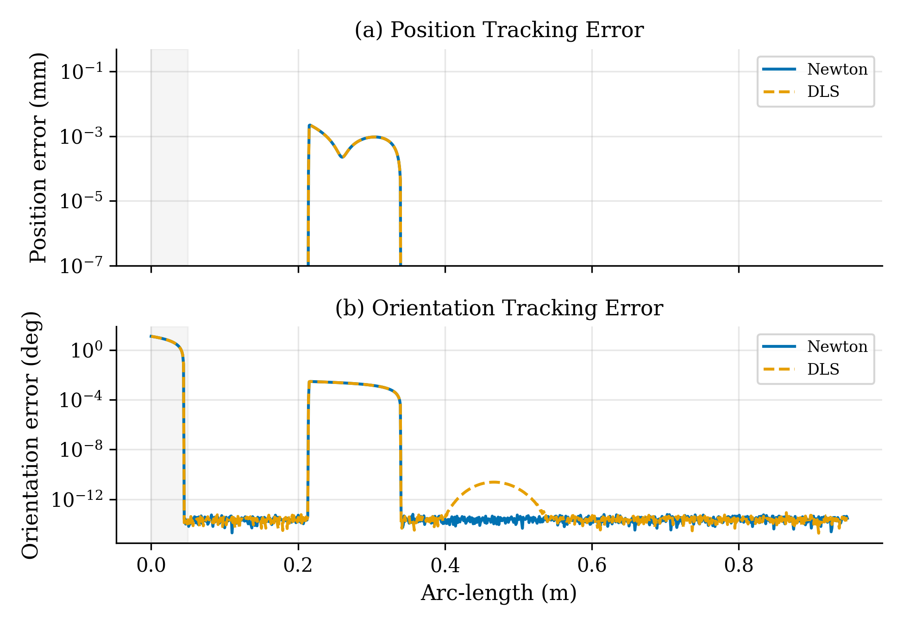
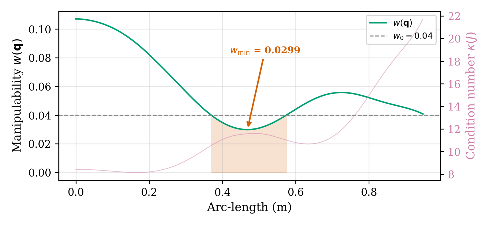

Redundancy Resolution and Singularity Avoidance for the 7-DOF Franka Emika Panda Manipulator in SE(3) Space
Northeastern University, Boston, MA 02115
This webpage serves as an interactive visual companion to our research report. It showcases the trajectory playbacks, simulation dashboards, and redundancy resolution comparisons that are impossible to fully convey in the written paper.
📺 Primary Demonstration Video
This comprehensive simulation video showcases the 7-DOF Franka Emika Panda arm tracing a helical trajectory ($r = 0.15$ m, $h = 0.1$ m) in the MuJoCo physics engine. It displays real-time coordinates, joint configuration margins, and Cartesian tracking errors.
🎬 Trajectory Tracking & Dashboard Videos
Below are loopable simulation recordings demonstrating the joint motion and real-time tracking metrics.
🎛️ Interactive Null-Space Centering Widget
Select different values of the null-space scaling gain ($\alpha$) to see how the solver exploits redundancy to avoid joint limits. At $\alpha = 0.00$, joints 4 & 6 drift close to their boundaries; increasing $\alpha$ pulls the configuration toward the center of the joint ranges.
📊 Performance Charts & Singularity Analysis
These figures illustrate Cartesian tracking errors and robot manipulability indices across the trajectory waypoints:


Key Insights:
- Singularity Robustness: In the low-manipulability region (Fig. 4), the standard Newton pseudoinverse is ill-conditioned, causing joint velocity spikes. The Damped Least Squares (DLS) solver dynamically adds regularizing damping, successfully bounding velocities while maintaining sub-millimeter tracking accuracy (Fig. 3).
- Redundancy centring: Active null-space centering ($\alpha = 0.50$) pulls the joint angles toward their midpoints, reducing the mean deviation from midpoints by 13.3% (from $39.5^\circ$ to $34.2^\circ$).
- Numerical Drift: Large null-space scaling (e.g., $\alpha = 0.50$) introduces a transient drift (peak Cartesian position error of $76.96$ mm) because the centering step slightly leaves the manifold on discrete-time steps. Reducing the gain to $\alpha = 0.10$ eliminates the drift, yielding sub-micron tracking identical to the pure pseudoinverse.
Data and Code Availability
The complete kinematics simulation scripts, data collectors, plotting code, and MuJoCo Panda XML model files are open-source and available in the experiments/ folder of this repository.